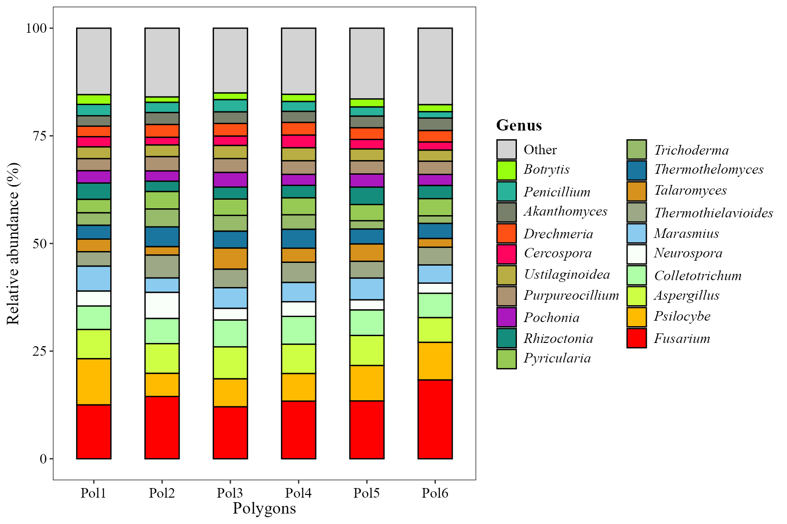
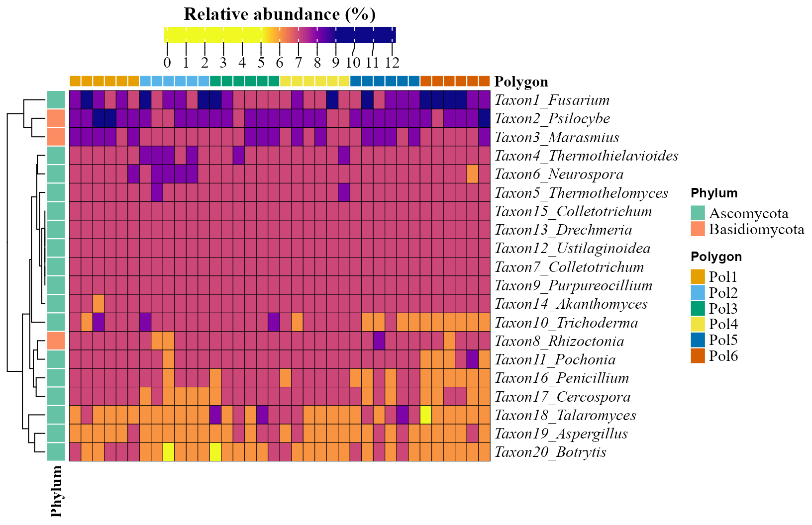
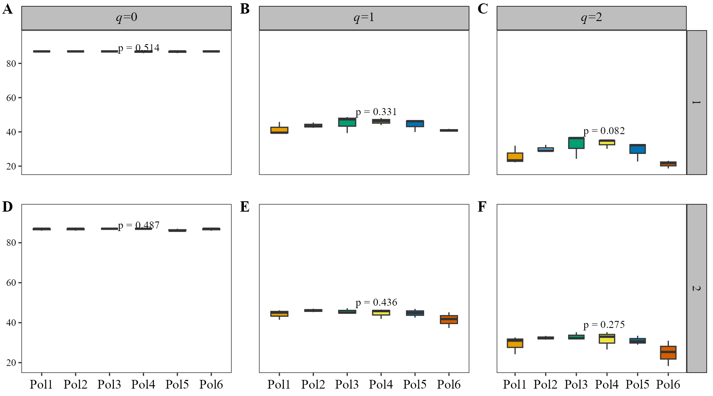
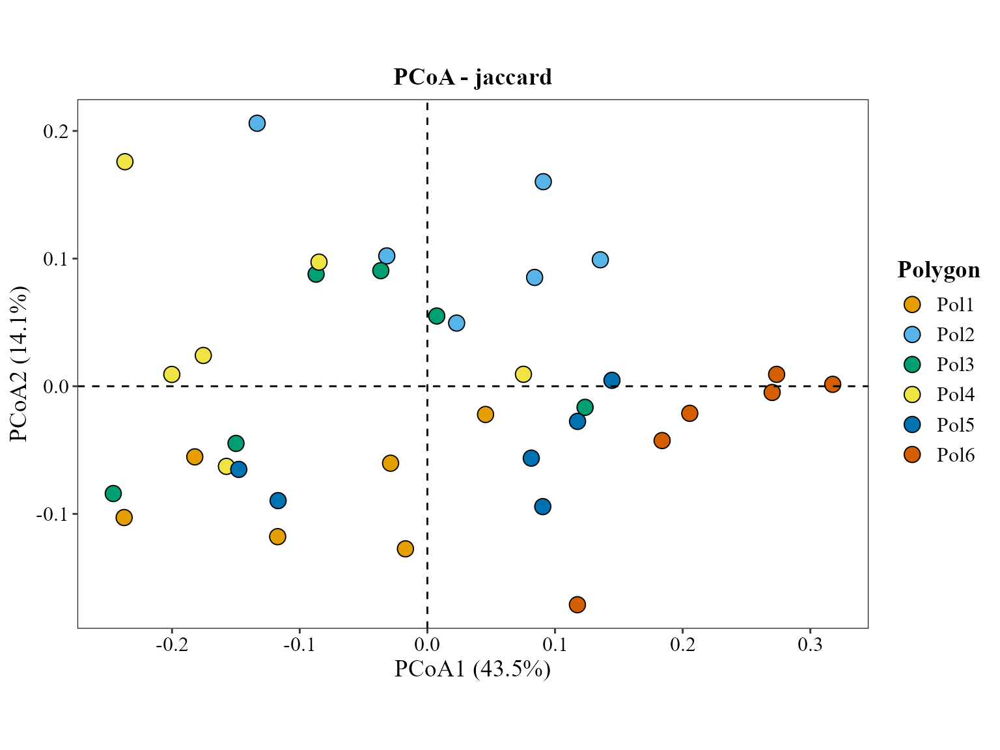
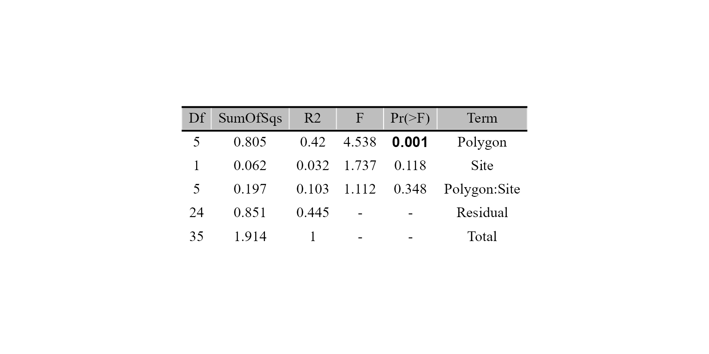
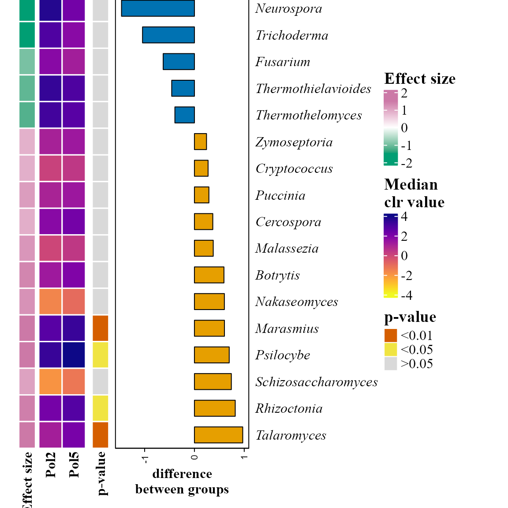
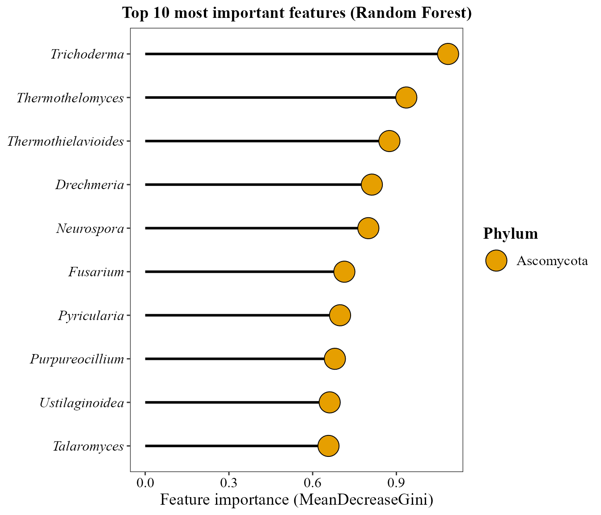

🍄 Este tutorial muestra cómo usar MicroBioMeta con
datos de metagenómica shotgun, como alternativa al
flujo de trabajo de amplicón (metabarcoding) cubierto en la viñeta de Amplicón. Las funciones y la
mayoría de sus parámetros son exactamente los mismos en ambos flujos de
trabajo, así que no se vuelven a explicar aquí, solo lo que es
específico de los datos metagenómicos.
Para este ejemplo, las lecturas fueron clasificadas taxonómicamente
con Kraken2 y
corregidas en abundancia a nivel de especie con Bracken.
Los datos provienen de suelos forestales a lo largo de los transectos Iztaccíhuatl-Popocatépetl (PNIP) y La Malinche (PNML), en el centro de México:
Datos crudos, metadatos y los scripts originales del análisis: github.com/Steph0522/Fungal_Metagenomes_PNIP_PNML
💻 Cargar los datos
Primero, carguemos MicroBioMeta y tidyverse
(usado para el manejo de datos):
## Warning: package 'dplyr' was built under R version 4.3.2## Warning: package 'lubridate' was built under R version 4.3.3Cada muestra se procesó por separado, así que los reportes
bracken_species se combinaron de antemano en una sola tabla
(una columna por muestra, llamada
kraken_pluspfp_<id_metagenome>_report_bracken_species)
con una columna taxonomy ya agregada como
última columna:
table_kraken <- read.delim("articles/data/table_kraken.txt", row.names = 1, check.names = FALSE)
table_kraken[1:3, c(1:2, ncol(table_kraken))]## kraken_pluspfp_100_report_bracken_species
## 101028 1302
## 36050 161
## 56646 108
## kraken_pluspfp_105_report_bracken_species
## 101028 1066
## 36050 345
## 56646 203
## taxonomy
## 101028 k__Eukaryota; p__Ascomycota; c__Sordariomycetes; o__Hypocreales; f__Nectriaceae; g__Fusarium; s__pseudograminearum
## 36050 k__Eukaryota; p__Ascomycota; c__Sordariomycetes; o__Hypocreales; f__Nectriaceae; g__Fusarium; s__poae
## 56646 k__Eukaryota; p__Ascomycota; c__Sordariomycetes; o__Hypocreales; f__Nectriaceae; g__Fusarium; s__venenatumLa taxonomía ya está en la tabla, así que no hace falta usar la
función merge_feature_taxonomy().
⚠️ Las cadenas de taxonomía de Kraken2 usan un prefijo
k__/p__/c__/… como SILVA/GTDB,
pero los rangos están separados por "; " (punto y coma
y espacio) en vez de ";".
MicroBioMeta ya tiene esto contemplado en cualquier lugar
donde exista un argumento taxonomy_db, solo pasa
taxonomy_db = "Kraken2".
Ahora, carguemos los metadatos:
metadata_meta <- read.delim("articles/data/metadata_metagenomic.txt", check.names = FALSE)
head(metadata_meta[, 1:10])## SAMPLEID id_sequence id_metagenome Poligono Sitio Transecto id_new id_fisicoq
## 1 P1S1T1 111 140 1 1 1 30 30
## 2 P1S1T2 112 152 1 1 2 13 <NA>
## 3 P1S1T3 113 164 1 1 3 21 21
## 4 P1S2T1 121 176 1 2 1 11 11
## 5 P1S2T2 122 188 1 2 2 33 13,33
## 6 P1S2T3 123 121 1 2 3 12 12
## Sites Names
## 1 1 Tetlanohcan 1
## 2 1 Tetlanohcan 1
## 3 1 Tetlanohcan 1
## 4 2 Tetlanohcan 2
## 5 2 Tetlanohcan 2
## 6 2 Tetlanohcan 2Los nombres de columna de Kraken codifican un número
id_metagenome (por ejemplo,
kraken_pluspfp_100_report_bracken_species) en vez del ID
real de la muestra, así que lo recuperamos con una expresión regular y
usamos metadata_meta$id_metagenome para renombrar cada
columna a su SampleID:
sample_cols <- setdiff(colnames(table_kraken), "taxonomy")
id_metagenome <- as.integer(gsub("kraken_pluspfp_|_report_bracken_species", "", sample_cols))
colnames(table_kraken)[match(sample_cols, colnames(table_kraken))] <-
metadata_meta$SAMPLEID[match(id_metagenome, metadata_meta$id_metagenome)]Renombremos y demos formato a los metadatos:
metadata_meta$Polygon <- factor(paste0("Pol", metadata_meta$Poligono), levels = paste0("Pol", 1:6))
metadata_meta$Site <- as.character(metadata_meta$Sitio)
table_meta <- table_kraken[, c(metadata_meta$SAMPLEID, "taxonomy")]Las coordenadas se tomaron y cargaron así:
coord_meta <- read.csv("articles/data/coord_metagenomic.csv") %>%
dplyr::select(-Site) %>% # descartamos el índice de sitio general propio del CSV (1-12); queremos `Sitio` (1-2) en su lugar
dplyr::rename(Polygon_num = pol, Site = Sitio) %>%
dplyr::select(Polygon_num, Site, Transecto, Latitude, Longitude)
metadata_meta <- metadata_meta %>%
dplyr::mutate(Polygon_num = as.integer(gsub("Pol", "", Polygon)), Site = as.integer(Site)) %>%
dplyr::left_join(coord_meta, by = c("Polygon_num", "Site", "Transecto")) %>%
dplyr::mutate(Site = as.character(Site))📊 Exploración de la composición
📊 Barplot de abundancia
Misma función que en la viñeta de amplicón; la única diferencia es
taxonomy_db = "Kraken2", que le indica a la lógica de
parseo de taxonomía que espere cadenas estilo Kraken2/Bracken.
abundance_bar_plot(table = table_meta,
metadata = metadata_meta,
taxonomy_db = "Kraken2",
level = "genus",
top_n = 20,
x_col = "Polygon",
x_axis_title = "Polygons",
add_remained = TRUE,
label = "Genus",
save_table = FALSE)
🖥️ Heatmap de abundancia
Los taxones de Kraken2/Bracken no son ASVs, así que aquí se usa
feature_prefix = "Taxon" en vez del prefijo
"ASV" por defecto para las etiquetas de fila.
abundance_heatmap_plot(table = table_meta,
metadata = metadata_meta,
top_n = 20,
show_column_names = FALSE,
condition1 = "Polygon",
feature_prefix = "Taxon")
📊 Diversidad alfa

📊 Visualización de diversidad alfa
fill_col es igual a x_col aquí, así que la
leyenda solo repetiría las etiquetas del eje x -
show_legend = FALSE la quita.
alpha_hill_plot(table = table_meta,
metadata = metadata_meta,
x_col = "Polygon",
fill_col = "Polygon",
facet_by = "Site",
facet_orientation = "horizontal",
legend_title = "",
stat = "kruskal.test",
show_legend = FALSE,
save_table = FALSE)
La riqueza (q=0) está casi saturada y plana entre bloques aquí — esta tabla de Bracken a nivel de género simplemente no tiene mucho margen para variar en q=0 — mientras que q=1 y q=2 (que ponderan por abundancia relativa) sí capturan diferencias entre bloques.
Diversidad alfa a lo largo de un gradiente continuo
alpha_decay_plot(table = table_meta,
metadata = metadata_meta,
cont_var = "pH",
x_axis_title = "Soil pH")
La diversidad en q=1 y q=2 aumenta significativamente con el pH del suelo; q=0 no, por la misma razón de efecto techo que arriba.
Diversidad beta
Ordenación de la composición de la comunidad
Podemos usar métricas que solo consideran presencia/ausencia como jaccard:
beta_ord_plot(table = table_meta,
metadata = metadata_meta,
distance = "jaccard",
ordination = "PCoA",
group_col = "Polygon")
Pruebas estadísticas para diversidad beta
method = "jaccard" coincide con el usado en la
ordenación de arriba, de modo que la ordenación y la prueba de
significancia evalúan la misma noción de disimilitud.
beta_test_table(table = table_meta,
metadata = metadata_meta,
formula_str = "Polygon*Site",
method = "jaccard",
test = "permanova",
permutations = 999)
Decaimiento de la similitud comunitaria con la distancia
beta_decay_plot() evalúa si las comunidades
geográficamente más cercanas también son más similares en
composición:
beta_decay_plot(
table = table_meta,
metadata = metadata_meta,
lat_col = "Latitude",
lon_col = "Longitude",
distance = "jaccard"
)
Las comunidades geográficamente más cercanas son significativamente
más similares (Mantel r ≈ 0.2, p = 0.002; el valor
exacto varía ligeramente entre corridas ya que la prueba de Mantel se
basa en permutaciones), una señal real de decaimiento con la distancia
en estos suelos forestales. Se usa jaccard para ser
consistentes con la ordenación de arriba.
Análisis de abundancia diferencial
Para las versiones de heatmap y ANCOMBC2 necesitamos un subconjunto
de 2 grupos del Polygon de 6 niveles; en esta parte
compararemos Polygon 2 y 5:
metadata_meta_compar <- metadata_meta %>%
filter(Polygon == "Pol2" | Polygon == "Pol5")
table_meta_compar <- table_meta[, c(match(metadata_meta_compar$SAMPLEID, colnames(table_meta)), ncol(table_meta))]
aldex_heatmap_plot(table = table_meta_compar,
metadata = metadata_meta_compar,
col_cond = "Polygon")
ancombc_plot(
table = table_meta_compar,
metadata = metadata_meta_compar,
col_cond = "Polygon",
tax_level = "Genus",
prv_cut = 0.05,
p_adj_method = "BH"
)
Identificando taxones importantes
random_forest_lollipop_plot(table = table_meta, metadata = metadata_meta, top_n = 10, variable_to_predict = "Polygon")
ratios_bubble_plot(table = table_meta_compar,
metadata = metadata_meta_compar,
condition_col = "Polygon",
top_n = 20,
condition_A = "Pol2",
condition_B = "Pol5")
Análisis ambientales
Los metadatos ya traen las variables fisicoquímicas del suelo medidas para estas muestras, así que la tabla ambiental se construye de la misma forma que en la viñeta de amplicón:
env_table_meta <- metadata_meta %>%
dplyr::select(SAMPLEID, pH:ARENA) %>%
remove_rownames() %>%
column_to_rownames(var = "SAMPLEID")Correlación entre variables ambientales y abundancia taxonómica
corr_env_abund_plot(table = table_meta,
env_table = env_table_meta,
metadata = metadata_meta,
taxonomy_db = "Kraken2",
level = "phylum",
save_table = FALSE)## Warning in corr_env_abund_plot(table = table_meta, env_table = env_table_meta,
## : Dropping non-numeric columns from `env_table`: type, type2
Ordenación restringida (CCA)
env_table_meta <- env_table_meta[
match(metadata_meta$SAMPLEID, rownames(env_table_meta)), , drop = FALSE]
cca_rda_biplot(table = table_meta,
env_data = env_table_meta,
metadata = metadata_meta,
env_vars = c("pH", "MO", "N", "P", "K"),
analysis = "CCA",
show_all_env_vectors = TRUE,
group_col = "Polygon",
scale_arrows = 3)